| 日付 | 2010年5月29日（土） - 2010年5月30日（日） |
|---|---|
| 山域 | 北アルプス |
| メンバー | 友人、家族 |
| アクセス | 電車、バス |
2日目
早起きして、宿の近くの河童橋まで景色を見に行くことにする。
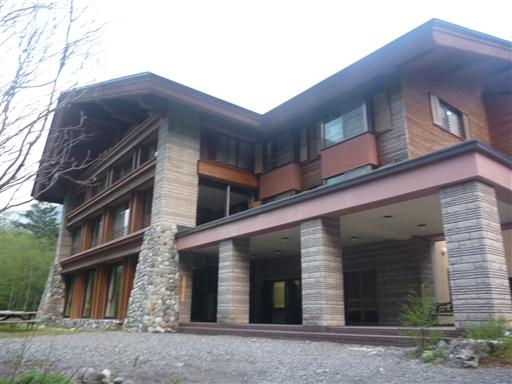
河童橋に到着。雲が低く下りてきている。これはこれで幻想的な風景だ。
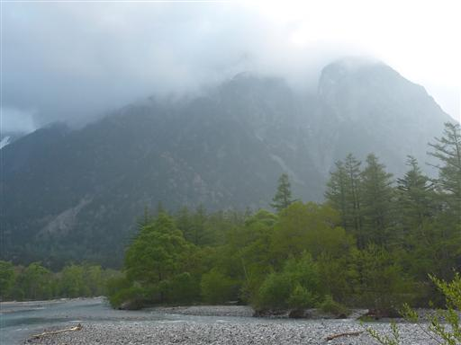
穂高岳にも雲がかかっている。空は比較的明るくどんよりはしていない。
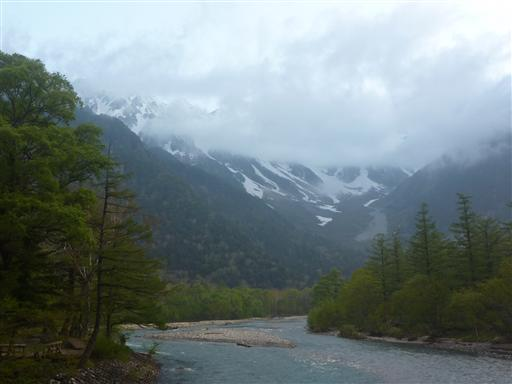
天気は良くないが、カメラの3脚がたくさん並んでいる。
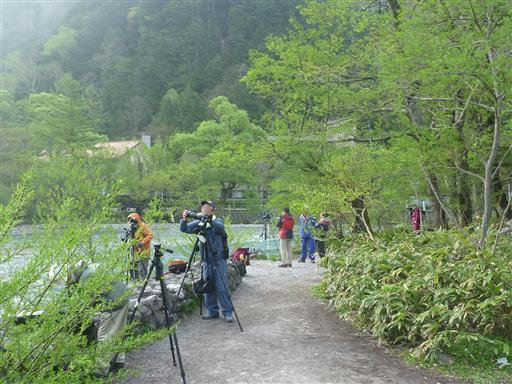
5:30 谷筋の上高地で日の出を迎える。

太陽が出て木々が輝き出す。
穂高岳にかかっていた雲が見る見る消えていく。
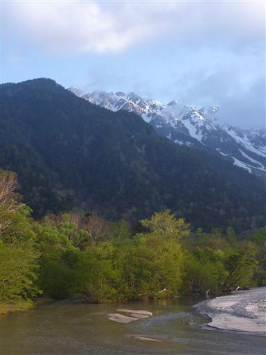
待つことしばしで雲は完全に消えて無くなる。

宿に戻ってくる。ひとっ風呂浴びて朝食をとる。食事は美味しくていい宿だった。
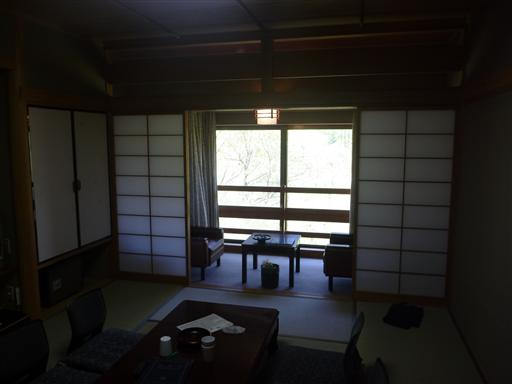
今日は梓川を遡って徳沢まで歩く予定だ。
穂高岳の反対側には、美しい梓川の向こうに焼岳の姿が見えている。
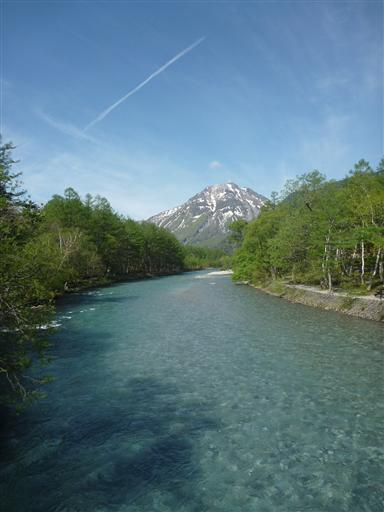
梓川沿いの遊歩道。歩いている人はちらほらいるが混雑はしていない。
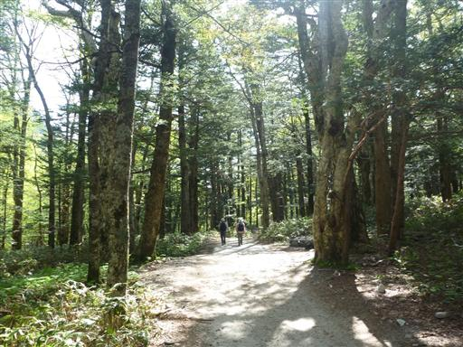
クルマバツクバネソウ。目立たない花だが、葉も花も特徴的だ。
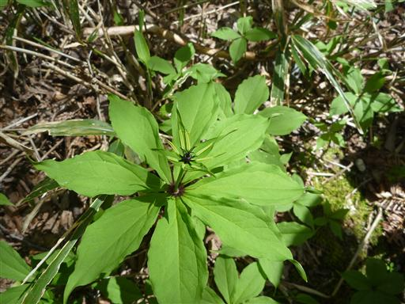
ツバメオモト。
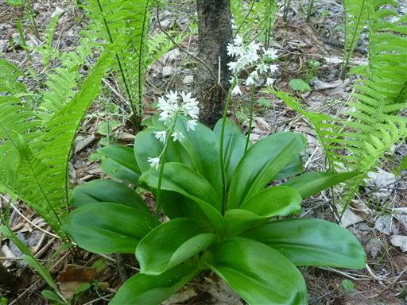
ツルネコノメソウ。小さな小さな花だ。
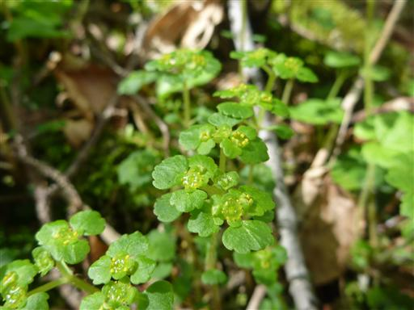
フッキソウ。さほど美しい花ではないが、漢字で書くと富貴草で優雅な名前だ。
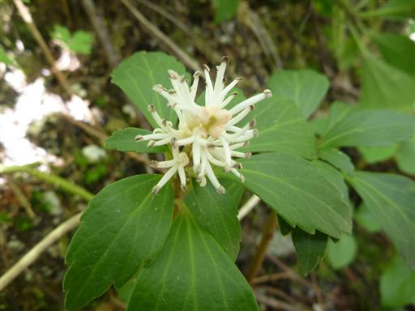
上高地は今がニリンソウの季節。たくさんのニリンソウが咲いている。
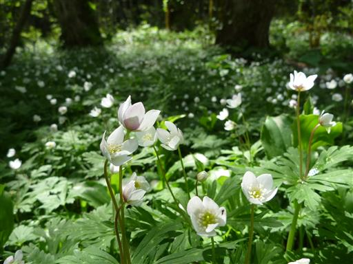
ハトが羽根を広げている。虫干しだろうか？
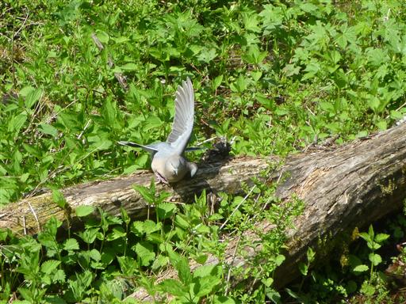
ヤマガラシ。アブラナ科の植物だ。
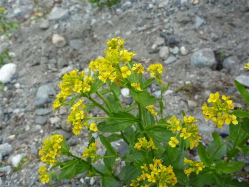
ミヤマハコベ。
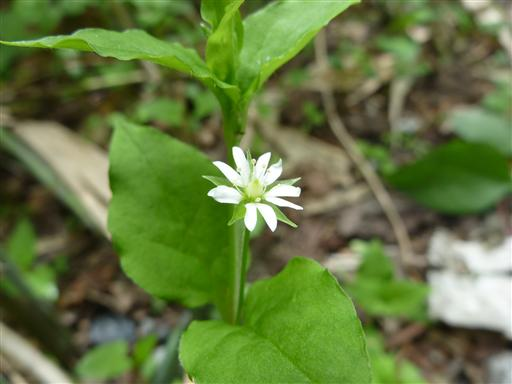
遊歩道脇に猿の群がいる。写真を撮っていると威嚇されてしまった。
上高地にいる猿なのに人に慣れていないのだろうか？
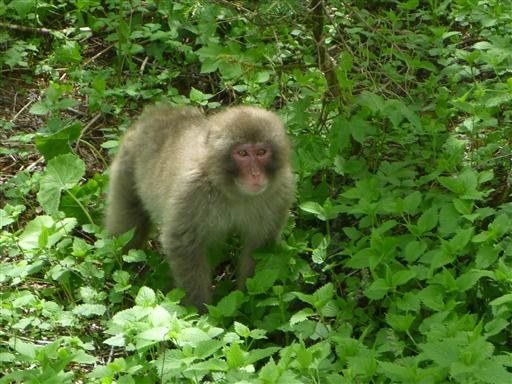
徳沢に近づくと奥穂高岳は見えなくなり、代わりに明神岳が目立ってくる。
真中のピークが明神岳、その右は前穂高岳だ。
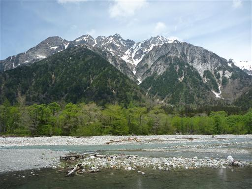
徳沢に到着。ここで腰を下ろしてのんびりする。
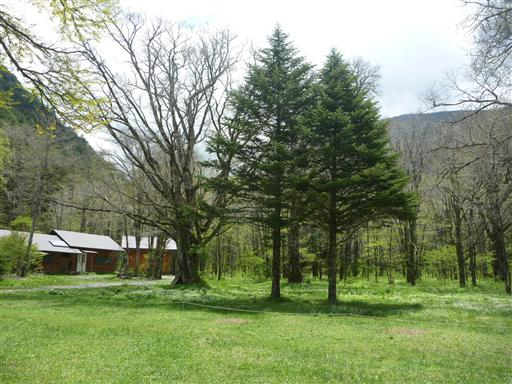
辺り一面ニリンソウの群落だ。地面が白く見えるほど多くの花が咲いている。
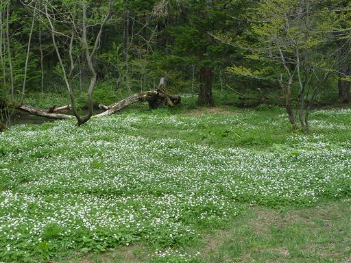
ミドリニリンソウ。よくよく見ると白いニリンソウの中に混ざっている。
葉は緑色なのであまり目立たず、よく見ないと見つからない。
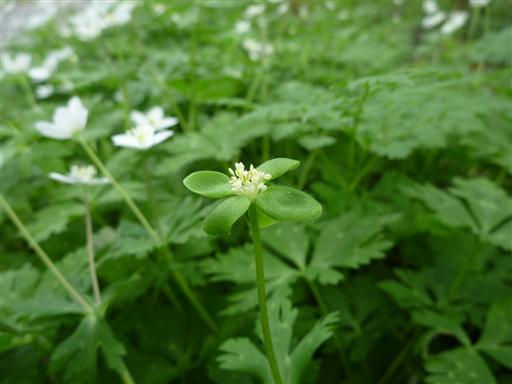
こちらは白と緑が混ざっている。

お昼近くになったので、徳沢で引き返し穂高神社奥宮に寄っていく。
ここに来るのも2度目だ。
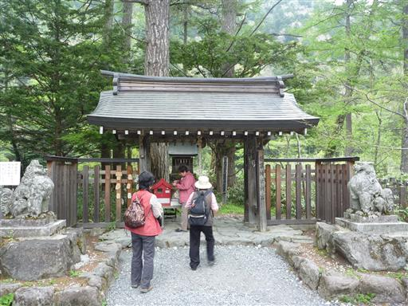
ウグイスが木にとまっている。ウグイスが鳴いているところを初めてこの目で見た。
小さな体全身を動かして鳴いている。
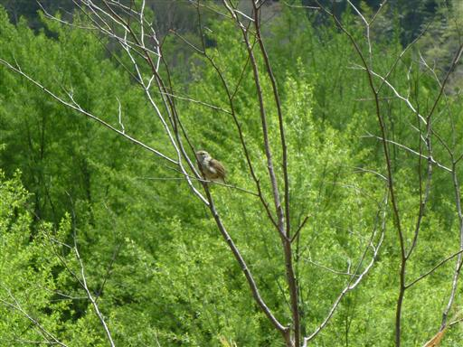
再び猿の群に遭遇。こちらの群は人間によく慣れていて、
観光客が近くで騒いでいても全く気にしない。
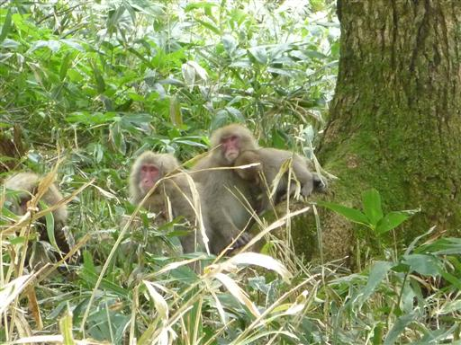
河童橋に戻ってくる。梓川と穂高岳の景色もこれでお別れだ。
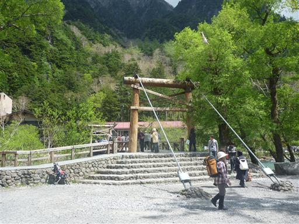
上高地バスターミナルに到着。大勢の人で賑わっている。
乗ろうとしていたバスはもうすでに予約で埋まっていたが、
幸い出発直前の一つ前のバスの席が空いていたので、それに飛び乗って帰宅する。
天気予報は曇予報や雨予報になったりと今一だったが、現地に着くと2日とも晴れ。
すばらしい景色を堪能できた上高地旅行だった。
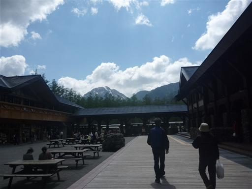